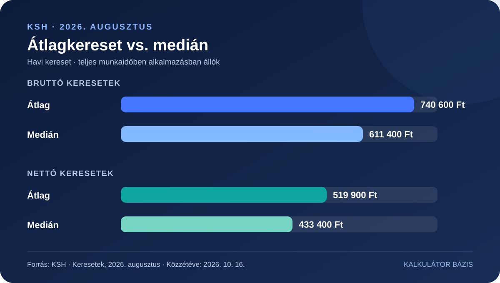

Az átlag és a medián egyetlen ábrán
Az országos átlagot a magasabb bérek is felfelé húzzák. A medián ezzel szemben az az érték, amelynél a keresők fele többet, fele kevesebbet keres.

A négy kulcsadat – pontosan
| Mutató | 2026. augusztus | Éves változás |
|---|---|---|
| Bruttó átlagkereset | 740 600 Ft | +8,4% |
| Bruttó mediánkereset | 611 400 Ft | +8,5% |
| Nettó átlagkereset | 519 900 Ft | +10,0% |
| Nettó mediánkereset | 433 400 Ft | +9,9% |
Miért nőtt gyorsabban a nettó, mint a bruttó?
A KSH szerint a nettó átlagkereset 10,0%-os éves emelkedését a bérek növekedése mellett az adókedvezmények változásai is befolyásolták. A családi kedvezmény emelése, valamint az anyákat érintő kedvezmények bővítése miatt a nettó és a bruttó mutató eltérő ütemben változott. Ez nem jelenti azt, hogy minden munkavállaló nettó bére 10%-kal emelkedett.
Mit jelent a 8,6%-os reálkereset-emelkedés?
A reálkereset azt mutatja meg, hogyan változott a kereset vásárlóereje az áremelkedés figyelembevételével. A KSH 2026 augusztusára 8,6%-os éves nettó reálkereset-növekedést közölt; az adott összehasonlításban a fogyasztói árak 1,3%-kal emelkedtek. Ez országos statisztika, az egyéni élethelyzetek ettől eltérhetnek.
Mit érdemes ebből hazavinni?
Ha a saját béredet szeretnéd elhelyezni az országos adatok között, a medián jó kiegészítése az átlagnak. Ha pedig fizetésemelést mérlegelsz, a bruttó összeg helyett a kedvezményeid alapján számított nettó és a vásárlóerő változása is fontos.
Elsődleges forrás: Központi Statisztikai Hivatal, „Keresetek, 2026. augusztus”, közzétéve 2026. október 16-án.